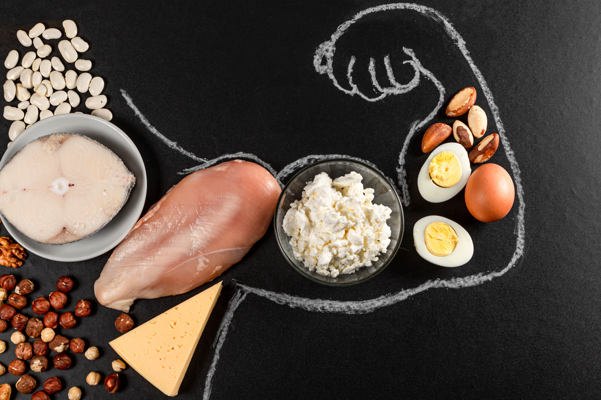

Hvorfor

Photo: Protein food and hand drawn with muscles- diet and fitness food concept by Marco Verch under Creative Commons 2.0
Kroppen trenger 3 forskjellige energigivende næringstoffer og mange forskjellige ikke energigivende næringsstoffer. Det kan ta lang tid å finne ut hvor du kan få disse næringsstoffene, for ikke å snakke om den lange prossesen med å tilbrede rettene. Det er derfor jeg har lagd denne retten, for å gjøre den prossesen rask og enkel. Denne retten er nøye tilbredt, for å få riktig mengde av de energigivende næringsstoffene. Denne retten er også vegetar, for de som er opptatt av det, og den krever ikke noe mer tilbredning etter at du har kjøpt den. Alle matvarene er spiselige, og alle kan få tak i matvarene på matbutikken. Den smaker også utrolig godt så klart.